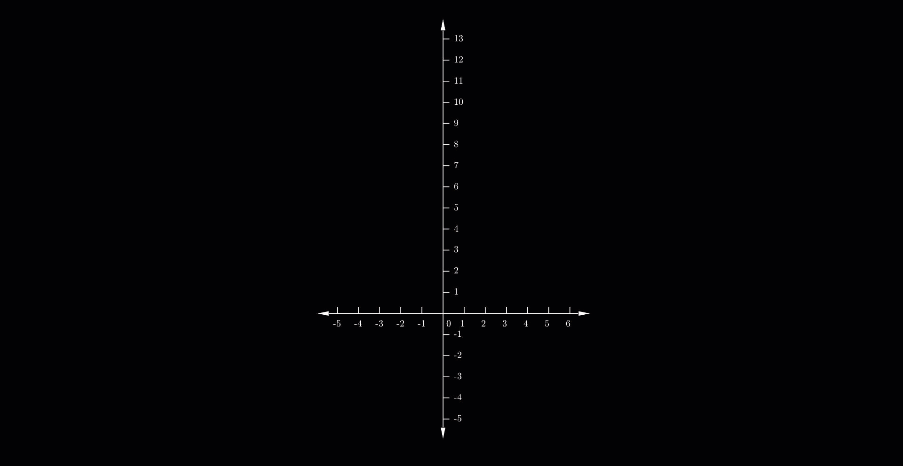

The secant technique is a root-finding procedure used in numerical analysis that improves upon an approximate root of a function \(f\) by using a series of roots of secant lines.
Let's consider the continous function \(f\)
\[ x_2 = x_1-f(x_1)\frac{(x_1-x_0)}{f(x_1)-f(x_0)} \]
\[ x_2 = x_1-f(x_1)\frac{(x_1-x_0)}{f(x_1)-f(x_0)} \]
Steps to find the root:
Example: Consider a function \(f(x)=2e^xsin(x)-2\)- Assume \(x_0\) and \(x_1\) be the initial guess
- Find next value \(x_2\)
- Replace \(x_0=x_1\) and \(x_1=x_2\)
- Repeat above two steps until \(f(x_2)=0\)

We have \(x_0=2 ~~ and ~~ x_1=1.5\)
\(1^{st}\) Iteration:
\(x_2 = x_1-f(x_1)\frac{(x_1-x_0)}{f(x_1)-f(x_0)}\)
\(x_2 = 1.5-f(1.5)\frac{(1.5-2)}{f(1.5)-f(2)}\)
\(x_2 = 0.7282\)
Now, for next iterations.
\(x_0=x_1 \implies x_0=1.5\)
\(x_1=x_2 \implies x_0=0.7282\)
\(1^{st}\) Iteration:
\(x_2 = x_1-f(x_1)\frac{(x_1-x_0)}{f(x_1)-f(x_0)}\)
\(x_2 = 1.5-f(1.5)\frac{(1.5-2)}{f(1.5)-f(2)}\)
\(x_2 = 0.7282\)
Now, for next iterations.
\(x_0=x_1 \implies x_0=1.5\)
\(x_1=x_2 \implies x_0=0.7282\)
| \(Iteration\) | \(~~~~~~~~~x~~~~~~~\) |
|---|---|
| \(~~~~~1^{st}\) | \(~~~~~0.7282\) |
| \(~~~~~2^{nd}\) | \(~~~~~0.6337\) |
| \(~~~~~3^{rd}\) | \(~~~~~0.5920\) |
| \(~~~~~4^{th}\) | \(~~~~~0.5886\) |
| \(~~~~~4^{th}\) | \(~~~~~0.5885\) |
We can stop the iteration here as the \(f(x)\) is closed to zero, so the root of the equation is \(x=0.5885\).